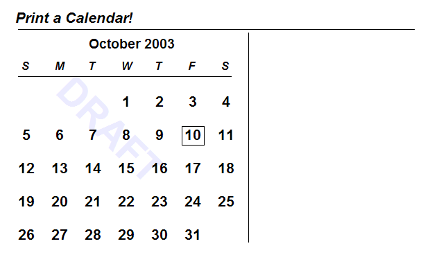
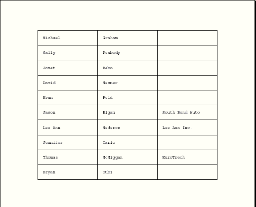
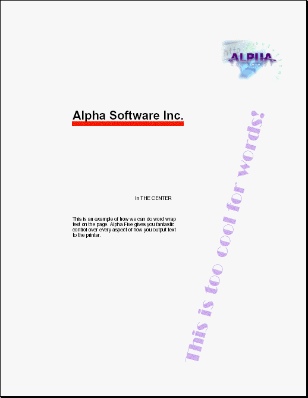
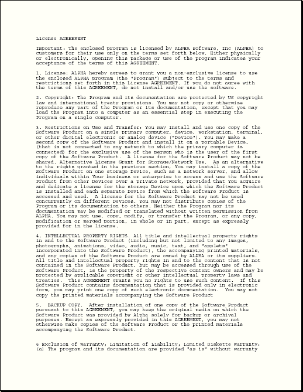

UI_PRINTER_DRAW()
Syntax
Status as C = UI_PRINTER_DRAW( Printer as C, Document as C, Output_Filename as C, Drawing_Code as C, Show_Dialog as L [, Settings as P ] )
Argument | Description |
Status | "Cancelled" = User cancelled "Completed" = Finished printing |
Printer | The printer name. |
Document | A message to display while the page is being generated. |
Output_Filename | The name of the print file to create. |
Drawing_Code | Code that generates bitmap data. See Displaying and Printing Bitmaps. |
Show_Dialog | Whether to hide the print dialog.
|
Settings | Optional. A dot variable that contains configuration settings for the printer. See below. |
Description
The UI_PRINTER_DRAW() function generates and sends text and graphics to a printer. Its purpose is to support printing through Xbasic in situations where the report writer does not give you sufficient control or flexibility.
Limitations
Desktop applications only.
Settings
The settings of a printer can be viewed through UI_PRINTER_SETTINGS_GET(). First get the printer name.
? ui_printers_get() = PDF Driver on LPT1: HTML Driver on HTM: Generic PostScript Printer on LPT1: Acrobat Distiller on Ne02: \\THUNDER\Compaq Laser Printer LNM40 (PCL) on Ne03: |
Next, specify the FULLNAME of the printer and call UI_PRINTER_SETTINGS_GET() to get the printers current settings.
settings.dummy = .t. ui_printer_settings_get("Acrobat Distiller on Ne02:",settings) ? settings = collate = .T. color = "Color" copies = 1.000000 defaultsource = "Automatically Select" dummy = .T. orientation = "portrait" papersize = "Letter" scale = 100.000000 truetype = "Substitute" |
To get ALL the values that properties can have, call UI_PRINTER_OPTIONS_GET()with the printer in question.
options.dummy = .t. ui_printer_options_get("Acrobat Distiller on Ne02:",options) ? options = collate = " color = Color Monochrome copies = " defaultsource = Automatically Select OnlyOne dummy = .T. duplex = Simplex Horizontal Vertical orientation = portrait landscape paperlength = " papersize = Letter Tabloid Ledger Legal Executive A3 A4 11 x 17 Screen PostScript Custom Page Size paperwidth = " quality = High Medium Low Draft scale = " truetype = Bitmap Download Substitute |
Examples
The following example was provided by Jerry Brightbill of Brightbill Consulting. It is an excellent example of how to use UI_PRINTER_DRAW() , UI_PRINTER_DEFAULT_GET(), UI_BITMAP_CREATE(), UI_BITMAP_DRAW(), UI_SCREEN_DRAW(),, and UI_BITMAP_DROP().
dim printer as C dim page_code as C dim curr_date as D dim day_start as N dim day_first as D dim day_last as D dim day_num[42] as C dim days_month as N dim cal_title as C dim chk as N dim date_num as D dim rows as N dim title as C dim x1 as N dim y1 as N curr_date = {10/10/2003} day_first = month_start(curr_date) day_start = dow(day_first) day_last = month_end(curr_date) days_month = day_last - day_first +1 rows = 5 for i = 1 TO day_start-1 day_num[i] = "" next k = 0 for i = day_start TO day_start + days_month - 1 k = k + 1 date_num = day_first + k - 1 day_num[i] = padl(alltrim(str(day(date_num))), 2, " ") next if (i > 35) then rows = 6 end if for i = day_start + days_month TO 42 day_num[i] = "" next title = "Print a Calendar!" cal_title = date_format(curr_date,"Month yyyy") watermark = "DRAFT" page_code = <<%code% set_brush("white") inner_rect(0,0,7.5,5) set_origin(2,-1) set_rotate(45) set_font("Arial,42,b", "Blue White", "white") text(watermark,2,2,"rotate") set_rotate(0) set_origin(0,0) set_font("Arial,16,bi","black") text(title,1,1) set_font("Arial,14,b") text(cal_title, 2.75 - text_width(cal_title)/2,1.4) set_font("Arial,12,bi") for j = 0 TO 6 text(word("S M T W T F S",j +1),j *.5 + 1.1,1.75) next line(1.05,1.3,7,1.3) line(1.05,2,4.25,2) line(4.5,1.35,4.5,4.5) k = 0 set_font("Arial,16,b","black") for i = 0 TO rows-1 for j = 0 TO 6 x1 = j *.5 + 1 y1 = (i * .5) + 1.25 k = k + 1 if val(day_num[k]) = day(curr_date) then rect(x1 , y1 + 1, .35, .3) end if text(day_num[k], x1 + .05, y1 + 1.02, "top") next j next i %code% ui_bitmap_create("test", 7.5, 5) ui_bitmap_draw("test", page_code) ui_dlg_box("","{image=test}") ui_bitmap_drop("test") chk = ui_msg_box("Print","Print Now? ",292) if (chk <> 6) then end end if printer = ui_printer_default_get() on error goto no_print ui_printer_draw(printer, "Calendar" ,"",page_code,.F.) end no_print: ui_msg_box("Error","Print Canceled
",16) 1=1 end |
The result is the following calendar.

Xbasic can also generate and print Postscript data. The following script provides an example of placing boxes and text on a page.
dim data[10] as P dim printer as C t = table.open("customer") for i = 1 to 10 data[i].firstname = t.Firstname data[i].lastname = t.Lastname data[i].company = t.Company t.fetch_next() next i t.close() printer = "Acrobat Distiller" rows = 10 columns = 3 width = 2 height = .5 lmargin = 1.25 tmargin = 1.0 page_description = <<%code% for i = 0 to rows-1 for j = 0 to columns-1 x1 = j * width + lmargin y1 = i * height + tmargin rect(x1, y1, width, height) if j = 0 then text(data[i+1].firstname, x1 + width/2, y1 + height/2, "center") else if j = 1 then text(data[i+1].lastname, x1 + width/2, y1 + height/2, "center") else if j = 2 then text(left(data[i+1].company,20), x1 + width/2, y1 + height/2, "center") end if next j next i new_page() %code% ui_printer_draw(printer, "please wait", "c:\distiller.ps", page_description) program_name = "C:\Program Files\Adobe\Acrobat 5.0\Distillr\AcroDist.exe" if file.exists("c:\distiller.pdf") then file.remove("c:\distiller.pdf") end if cmd = program_name + " c:\distiller.ps" sys_shell(cmd) wait_until(file.exists("c:\distiller.pdf"), 1, 10) sys_open("c:\distiller.pdf") |
The result looks like this:

The following example shows how to place graphics, text, and rotated type. DIM and assign values to control variables.
dim printer as C dim program_name as C printer = "Acrobat Distiller" program_name = "C:\Program Files\Adobe\Acrobat 5.0\Distillr\AcroDist.exe" rows = 10 columns = 3 width = 2 height = .5 lmargin = .5 tmargin = 1 |
Load a bitmap from a file so that it may be printed.
bitmapfile = "C:\documents\Xbasic Reference\Images\logo.bmp" bddata = file.to_blob(bitmapfile) ui_bitmap_load("tempbitmap", bddata) |
Now word wrap a paragraph of several lines.
word_wrap_text = <<%a% This is an example of how we can do word wrap text on the page. Alpha Anywhere gives you fantastic control over every aspect of how you output text to the printer. %a% |
Start the page description and get page dimensions.
page_description = <<%code% 'this tells me how big the page is in inches page_width = extent_width() page_height = extent_height() |
Place "Alpha Software Inc." on the page with a red bar under it. The text is left aligned. Other options for alignment are: right, center, left-top, right-top, bottom-left, left-center etc. and rotate (used with ((SET_ROTATE Function|SET_ROTATE())).
set_font("Arial,24,B") text = "Alpha Software Inc." text(text, 2, 3, "Left") 'measure the width and height of the last text we wrote w = text_width(text) h = text_height(text) set_brush("red") inner_rect(2,3 + h, w, .1) |
Place a the bitmap we loaded earlier on the page.
bitmap("tempbitmap",6, 1 ,1.88889, 1.34722) |
Put some slanted text on the page.
text = "This is too cool for words!" set_origin(5,10) set_rotate(-75) set_font("broadway bt,36", "lavendar", "white") text(text,0,0,"rotate") set_font("arial,10", "black", "white") set_rotate(0) |
Use the ((NEW_PAGE Function|NEW_PAGE()))function if you want to print more than one page. Now place something in the center of the page.
set_origin(page_width/2, page_height/2) text("IN THE CENTER",0,0,"CENTER") set_origin(0,0) 'offset h = wrap_text_height(word_wrap_text, 2) offset = draw_wrap_text(word_wrap_text, 2, 6, 3, h) %code% |
Print it through the Acrobat Distiller.
ui_printer_draw(printer,"please wait", "c:\distiller.ps", page_description) program_name = "C:\Program Files\Adobe\Acrobat 5.0\Distillr\AcroDist.exe" if file.exists("c:\distiller.pdf") then file.remove("c:\distiller.pdf") end if cmd = program_name + " c:\distiller.ps" sys_shell(cmd) wait_until(file.exists("c:\distiller.pdf"), 1, 10) sys_open("c:\distiller.pdf") |
The results look like this.

The following example shows how to print multiple pages of text.
printer = "Acrobat Distiller" program_name = "C:\Program Files\Adobe\Acrobat 5.0\Distillr\AcroDist.exe" long_text = <<%a% License AGREEMENT Important: The enclosed program is licensed by ALPHA Software, Inc (ALPHA) to customers for their use only on the terms set forth below. Either physically or electronically, opening this package or use of the program indicates your acceptance of the terms of this AGREEMENT. 1. License: ALPHA hereby agrees to grant you a non-exclusive license to use the enclosed ALPHA program (the "Program") subject to the terms and restrictions set forth in this License AGREEMENT. If you do not agree with the terms of this AGREEMENT, do not install and/or use the software. 2. Copyright: The Program and its documentation are protected by US copyright law and international treaty provisions. You may not copy or otherwise reproduce any part of the Program or its documentation, except that you may load the Program into a computer as an essential step in executing the Program on a single computer. 3. Restrictions on Use and Transfer: You may install and use one copy of the Software Product on a single primary computer, device, workstation, terminal, or other digital electronic or analog device ("Device"). You may make a second copy of the Software Product and install it on a portable Device, (that is not connected to any network to which the primary computer is connected) for the exclusive use of the person who is the user of the first copy of the Software Product. A license for the Software Product may not be shared. Alternative License Grant for Storage/Network Use. as an alternative to the rights granted in the previous section, You may install a copy of the Software Product on one storage Device, such as a network server, and allow individuals within Your business or enterprise to access and use the Software Product from other Devices over a private network, provided that You acquire and dedicate a license for the storage Device upon which the Software Product is installed and each separate Device from which the Software Product is accessed and used. A license for the Software Product may not be used concurrently on different Devices. You may not distribute copies of the Program or its documentation to others. Neither the Program nor its documentation may be modified or translated without written permission from ALPHA. You may not use, copy, modify, or transfer the Program, or any copy, modification or merged portion, in whole or in part, except as expressly provided for in the license. 4. INTELLECTUAL PROPERTY RIGHTS. All title and intellectual property rights in and to the Software Product (including but not limited to any images, photographs, animations, video, audio, music, text, and "applets" incorporated into the Software Product), the accompanying printed materials, and any copies of the Software Product are owned by ALPHA or its suppliers. All title and intellectual property rights in and to the content that is not contained in the Software Product, but may be accessed through use of the Software Product, is the property of the respective content owners and may be protected by applicable copyright or other intellectual property laws and treaties. This AGREEMENT grants you no rights to use such content. If this Software Product contains documentation that is provided only in electronic form, you may print one copy of such electronic documentation. You may not copy the printed materials accompanying the Software Product. 5. BACKUP COPY. After installation of one copy of the Software Product pursuant to this AGREEMENT, you may keep the original media on which the Software Product was provided by Alpha solely for backup or archival purposes. Except as expressly provided in this AGREEMENT, you may not otherwise make copies of the Software Product or the printed materials accompanying the Software Product. 6 Exclusion of Warranty; Limitation of Liability; Limited Diskette Warranty: (a) The program and its documentation are provided "as is" without warranty of any kind, either expressed or implied, including, but not limited to, the IMPLIED WARRANTIES OF MERCHANTABILITY AND FITNESS FOR A PARTICULAR PURPOSE. The entire risk as to the results and performance of the program is assumed by you. Should the Program or its documentation prove defective, you (and not Alpha or its dealers) assume the entire cost of all necessary servicing, repair, or correction. (b) In no event shall Alpha nor its suppliers no anyone else who has been involved in the creation, production, or delivery of this Program and its documentation be liable for any direct, indirect, consequential, special or incidental damages whatsoever (including, without limitation, damages from the loss of profits, business interruptions, loss of business or confidential or other information, or business interruption, or personal injury, or loss or privacy, or failure to meet any duty including of good faith or reasonable care or negligence or any other pecuniary loss or other loss whatsoever) arising out of or in any way related to the use of or inability to use such products, or the provision of or the failure by ALPHA or any of its suppliers to provide support services or otherwise under or in connection with any provision of this AGREEMENT, even in the event of the fault, tort (including negligence) strict liability, breach of contract or breach of warranty of Alpha or any supplier and even if Alpha or any supplier has been advised of the possibility of such damages or claim. (c) Alpha warrants the enclosed CD (but not the Program contained thereon) to be free of defects in materials and workmanship under normal use for 30 days after purchase. During the 30-day period, you may return a defective CD to an Authorized Alpha Dealer, and it will be replaced without charge unless the diskette or CD is damaged by accident or misuse. Replacement of a diskette or CD is your sole remedy in the event of a defect. This warranty gives you specific legal rights, and you may also have other rights which vary from state to state. 7. Product Improvements: Alpha reserves the right to make corrections or improvements to the Program and its documentation and to the related CD at any time without notice and with no responsibility to provide these changes to purchasers of earlier versions of such products. 8. Term: This license is effective until terminated. You may terminate it by destroying the Program and its documentation and all copies thereof. This license will also terminate if you fail to comply with any term or AGREEMENT. You agree upon such termination to destroy all copies of the Program and its documentation. 9. ENTIRE AGREEMENT. This AGREEMENT is the entire AGREEMENT between you and ALPHA relating to the Software Product and the support services (if any) and they supersede all prior or contemporaneous oral or written communications, proposals and representations with respect to the Software Product or any other subject matter covered by this AGREEMENT. To the extent the terms of any ALPHA policies or programs for support services conflict with the terms of this AGREEMENT, the terms of this AGREEMENT shall control. 10. This AGREEMENT is governed by the laws of the Commonwealth of Massachusetts. USA %a% |
Now paginate the text.
page_description = <<%code% 'this tell me how big the page is in inches page_width = extent_width() page_height = extent_height() offset = 1 len = len(long_text) 'this shows how to split long text across the page onto multiple pages. 'offset returns how much of the text was printed. while (offset < len) offset = draw_wrap_text(long_text, 1, 1, page_width - 2, page_height - 2, offset) if offset < len then new_page() end if end while %code% |
Now print the pages.
ui_printer_draw(printer,"please wait", "c:\distiller.ps", page_description) program_name = "C:\Program Files\Adobe\Acrobat 5.0\Distillr\AcroDist.exe" if file.exists("c:\distiller.pdf") then file.remove("c:\distiller.pdf") end if cmd = program_name + " c:\distiller.ps" sys_shell(cmd) wait_until(file.exists("c:\distiller.pdf"), 1, 10) sys_open("c:\distiller.pdf") |
The first page of the result looks like this.

See Also
Displaying and Printing Bitmaps